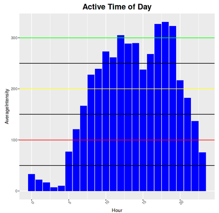
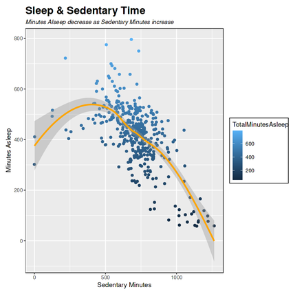

Case Study — Health & Fitness
What do smart-device usage patterns reveal about who stays engaged and who drops off? What should a wellness company actually do about it? A capstone analysis of fitness tracker data using R.
The client: Bellabeat, a wellness-tech company making smart devices for women, wanted to understand how people actually use fitness trackers day to day, and how that understanding could sharpen their marketing strategy.
The task: analyze smart-device usage records, steps, activity minutes, sleep, and engagement frequency, to identify behavior patterns tied to daily engagement, then translate those patterns into concrete recommendations Bellabeat's marketing team could act on.
Clean with janitor & lubridate. Standardized column names, parsed and validated date/time fields, and checked the usage logs for duplicates and gaps before analysis.
Explore with dplyr & tidyverse. Segmented users by activity level and engagement frequency, then ran trend and correlation analysis to see which behaviors tracked with sustained daily use versus drop-off.
Visualize with ggplot2. Built publication-ready charts to communicate the three key patterns clearly enough for a non-technical marketing audience.
Translate to recommendations. Converted the statistical findings into specific marketing actions targeting inactive users, with an estimated impact on daily active users.
Three distinct usage patterns emerged from the engagement data, each with a different implication for how and when Bellabeat should prompt users to stay active with their device.
Targeting inactive users directly is projected to lift daily active users by 15% — the headline recommendation delivered to stakeholders, backed by the underlying segmentation.
Statistical rigor behind the story: findings were built on trend analysis, correlation studies, and user segmentation rather than surface-level averages, and presented as publication-ready visuals rather than raw output.

Active Time of Day Chart
Sleep & Sedentary Time Chart